QUESTIONÁRIO
| Versão | Data | Modificação | Autor |
|---|---|---|---|
| 0.1 | 08/04/2019 | Questionário geral e usuários do Brainly | Gustavo Marques, Ivan Dobbin |
| 0.2 | 08/04/2019 | Questionário geral apenas | Ivan Dobbin, Gustavo Marques |
| 1.0 | 09/04/2019 | Questionário direcionado | Leonardo Medeiros, Ivan Dobbin, Gustavo Marques |
| 2.0 | 09/04/2019 | Adiciona resultado do questionário e realiza análise | Gustavo Marques, Ivan Dobbin |
| 2.1 | 10/04/2019 | Altera estrutura de apresentação do questionário | Welison Regis |
| 2.2 | 10/04/2019 | Adição da tabela e aplicação do MoSCoW nos requisitos elicitados | Gustavo Marques, Ivan Dobbin |
As perguntas realizadas nesse questionário podem ser visualizadas AQUI.
ANÁLISE DAS RESPOSTAS DO QUESTIONÁRIO
Pergunta 1
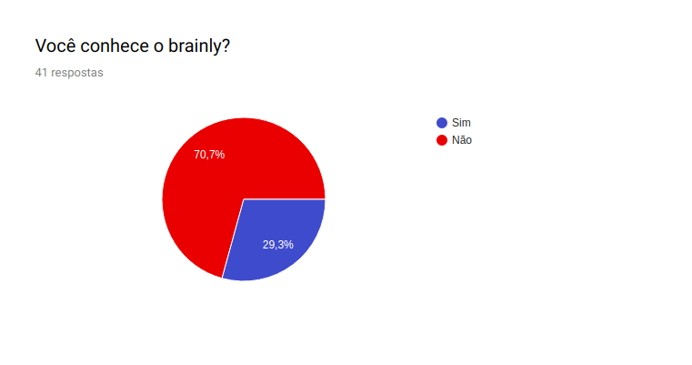 De acordo com esse dado a plataforma não é tão conhecida pelo público entrevistado, no caso o público universitário.
Pergunta 2
- Você entende como funciona o sistema de perguntas? Se não, quais foram suas dificuldades ao usar o sistema?
| Sim |
| sim |
| Não, interface muito confusa |
| Sim. O guia é bom para fazer perguntas boas |
Pelas respostas podemos concluir que o sistema de perguntas foi desenvolvido de tal maneira que a maioria dos usuários não tenha dificuldades em compreender seu funcionamento.
Pergunta 3
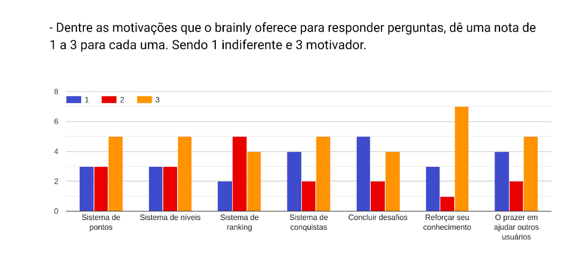 Para usuários que já conhecem a plataforma o sistema de gamificação tem incentivado na hora de ajudar a plataforma com respostas. Isso não tira o fato de que reforçar o conhecimento é um foco principal.
Pergunta 4
- Você adicionaria alguma outra funcionalidade para motivar os usuário do brainly a responder perguntas? Se sim, qual?
| Não |
| Sim, mais recompensas |
| Ajudar ao proximo |
| Responder o pc e não outro alguém. |
| As pessoas que tiveram perguntas respondidas poderiam mostrar fruto dessa mesma resposta. Seria mais incentivador |
| Pagamento em dinheiro |
| Retorno monetário. |
Em geral a ideia de funcionalidade para motivação mais relevante é o retorno monetário para quem respondeu a pergunta. Além disso algumas das ideias citadas já estão implementadas na plataforma, que são: Aumentar a pontuação adquirida ao responder alguma pergunta, isso pode ser caracterizado como os desafios, e o feedback e acompanhamento de perguntas e respostas nas quais o usuário fez parte.
Pergunta 5
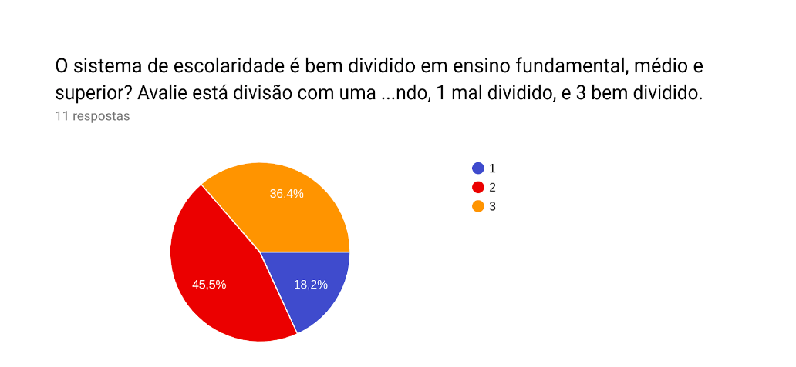 Esses dados mostram que a divisão de matérias tem uma taxa baixa de rejeição, e pode ser considerada boa, sendo que a maioria dos usuários se mostram indiferentes e uma boa parte concorda que a divisão é boa do jeito que está.
Pergunta 6
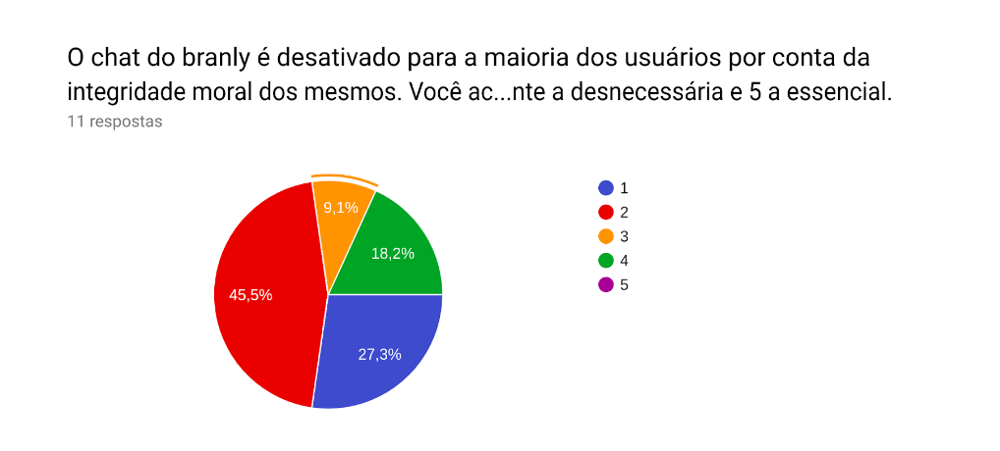 De acordo com o questionário o chat não é algo essencial para os usuários do brainly, portanto a política adotada de indisponibilizar o chat para novos usuários é bastante eficiente. Além de evitar problemas de integridade moral dos usuários não trás uma grande perda para o app.
Pergunta 7
- Você adicionaria mais áreas de conhecimento no brainly, se sim, quais?
| Não |
| Não sei |
| A área que a pessoa for perguntar precisar |
As pessoas se mostraram indiferentes quanto a novas áreas de conhecimento da plataforma. As áreas de conhecimento existentes parecem ser o suficiente para os usuários da pesquisa.
Pergunta 8
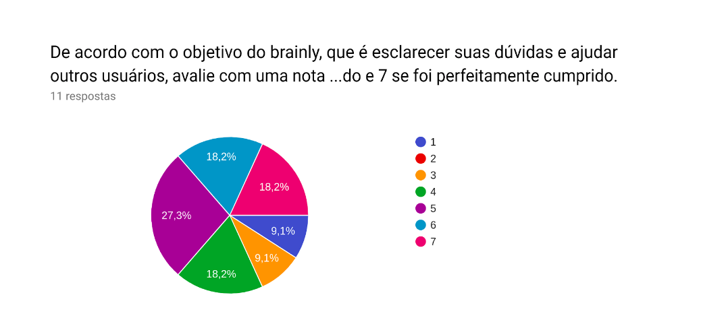 Para mais da metade dos entrevistados, a plataforma tem postura positiva no quesito de exercer seu objetivo principal, a taxa de pessoas que discordam dessa afirmação é baixa.
Pergunta 9
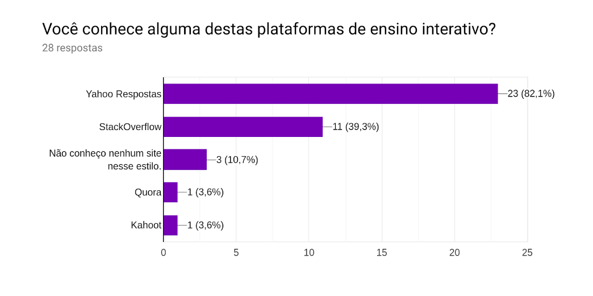 O dado acima é reforçado, pelo fato de muitas pessoas conhecem plataformas concorrentes porém não conhecem o brainly. Isso mostra que o sistema tem perdido usuários do âmbito universitário para outras plataformas.
Pergunta 10
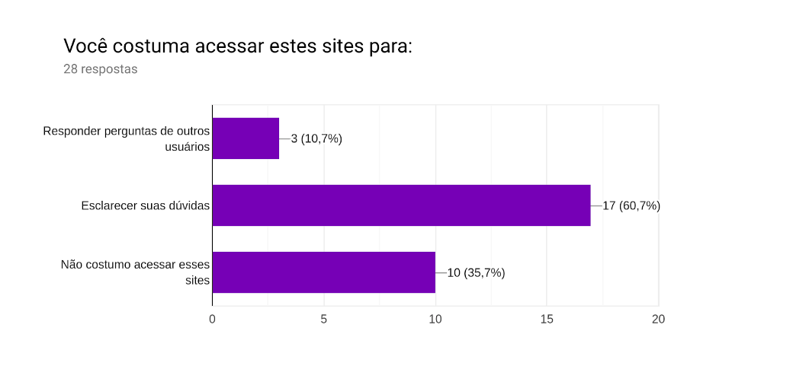 Boa parte do público não tem intenção de acessar plataformas similares para responder perguntas. Portanto o trabalho de tornar o ato de responder dúvidas atrativo é importante.
Pergunta 11
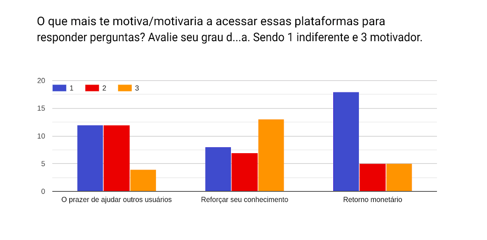 O retorno monetário como incentivo se mostrou indiferente para muitos usuários. O fator mais relevante para incentivar usuários a responder dúvidas é reforçar o conhecimento que ele já possui.
Pergunta 12
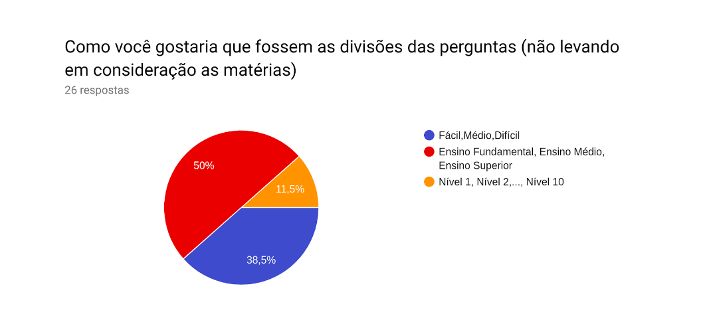 Pode-se perceber que os usuários de nossa pesquisa em sua maioria preferem a divisão em níveis de escolaridade, assim podemos concluir que o Brainly fez uma boa divisão.
Pergunta 13
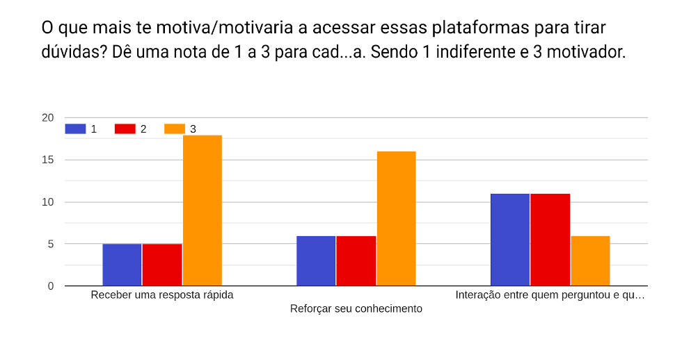 Essa resposta reforça o que já foi deixado claro, que o principal incentivo para um usuário responder perguntas na plataforma é reforçar seu conhecimento. Também podemos ver que a grande maioria tem interesse apenas em receber respostas rápidas, e que a interação com quem respondeu ou quem perguntou não é algo primordial
Pergunta 14
- Existe alguma característica dessas plataformas que te desmotiva ou que o desmotivaria a utilizá-las? Se sim, quais e qual sua sugestão para resolução desse problema?
| Não |
| Respostas sem sentido ou sem baseamento científico. |
| Falta de confiabilidade nas respostas, uma solução seria o uso de referências |
| Resposta "desnecessárias". Se não se sabe a resposta, evitar respostas "sem noção" |
| Desconheço |
| Normalmente quero respostas rápidas, então só olho as perguntas já feitas e respondidas, não faço novas |
| Realizar inscrições |
| A falta de confiança nas respostas. Seria legal se fosse uma plataforma respondida apenas por professores |
| não conheço e não utilizo essas plataformas |
| Respostas sucintas e mal respondidas |
| Não saber se é confiável. |
As respostas acima mostra que a confiabilidade das respostas é algo de suma importância em uma plataforma como essa. Respostas ruins afetariam a plataforma como um todo.
Pergunta 15
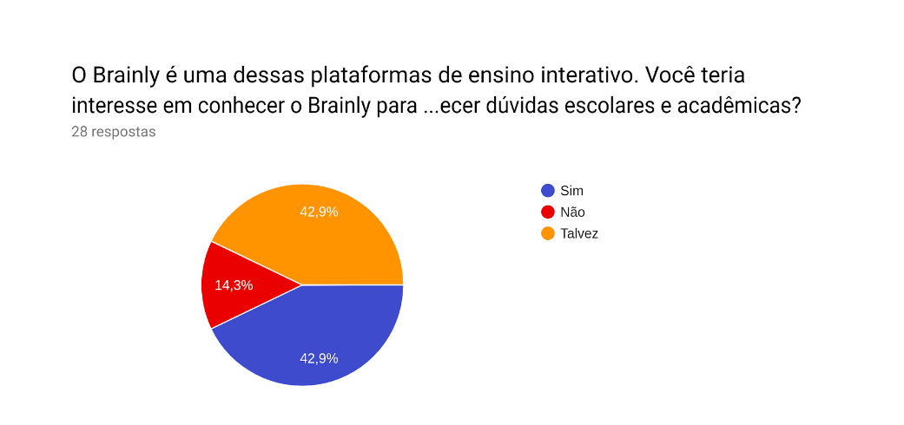 Esse resultado mostra que foi feita uma boa escolha de público para a pesquisa, pois boa parte deste teria ou poderia ter interesse em conhecer o brainly.
QUESTIONÁRIO APLICADO
Pergunta 1 para todos.
- Você conhece o brainly? ( ) Sim ( ) Não
Perfil alvo - Usuários que não conhecem o brainly.
Branch 1
-
Você conhece alguma dessas plataformas de ensino interativo? ( ) Yahoo Respostas ( ) Brainly ( ) StackOverflow ( ) Não conheço nenhum site nesse estilo. ( ) Outro: _______
-
Você costuma acessar esses sites para: ( ) Responder Perguntas de outros usuários ( ) Esclarecer suas dúvidas ( ) Não costumo acessar esses sites
-
O que mais te motiva/motivaria a acessar essas plataformas para resṕonder perguntas? Dê uma nota de 1 a 3 para cada uma. Sendo 1 indiferente e 3 motivador. O prazer de ajudar outros usuários. 1( ) 2( ) 3( ) Reforçar seu conhecimento. 1( ) 2( ) 3( ) Retorno monetário. 1( ) 2( ) 3( )
-
O que mais te motiva/motivaria a acessar essas plataformas para tirar dúvidas? Dê uma nota de 1 a 3 para cada uma. Sendo 1 indiferente e 3 motivador. ( ) Receber uma resposta rápida. ( ) Reforçar seu conhecimento. ( ) Interação entre quem perguntou e quem respondeu(desde um agradecimento até tirar dúvidas sobre a resolução do problema) ( ) Outros: _______
-
Existe alguma característica dessas plataformas que te desmotiva ou que o desmotivaria a utilizá-las? Se sim, quais e qual sua sugestão para resolução desse problema? _____________
-
Brainly é uma dessa plataformas de ensino interativo.Você gostaria de conhecer o Brainly para esclarecer dúvidas escolares e acadêmicas? ( ) Sim ( ) Não ( ) Talvez
Perfil alvo - Usuários que utilizam o braily
Branch 2
-
Você entende como funciona o sistema de perguntas? Se não, quais foram suas dificuldades ao usar o sistema? _____________
-
Dentre as motivações que o brainly oferece para responder perguntas, dê uma nota de 1 a 3 para cada uma. Sendo 1 indiferente e 3 motivador. ( ) Sistema de pontos ( ) Sistema de níveis ( ) Sistema de ranking ( ) Sistema de conquistas ( ) Concluir desafios ( ) Reforçar seu conhecimento ( ) O prazer em ajudar outros usuários.
-
Você adicionaria alguma outra funcionalidade para motivar os usuário do brainly a responder perguntas? Se sim qual? _________________
-
O sistema de escolaridade é bem dividido em ensino fundamental, médio e superior? Dê uma nota de 1 a 3 sendo, 1 mal dividido, e 3 bem dividido. ( ) 1 ( ) 2 ( ) 3
-
O chat do branly é desativado para a maioria dos usuários por conta da integridade moral dos mesmos.Você acha que esse tipo de plataforma deveria manter o chat? Lembrando que ainda pode-se interagir pelos comentários dos problemas de maneira limitada. De uma nota de 1 a 5, sendo 1 equivalente a desnecessária e 5 equivalente a essencial. ( ) 1 ( ) 2 ( ) 3 ( ) 4 ( ) 5
-
Você adicionaria mais áreas de conhecimento no brainly, se sim, quais? _____________
-
De acordo com o objetivo do brainly, que é esclarecer suas dúvidas e ajudar outros usuários, dê uma nota de 1 a 7 correspondendo ao objetivo do app. 1 caso o objetivo não tenha sido cumprido e 7 se foi perfeitamente cumprido. ( ) 1 ( ) 2 ( ) 3 ( ) 4 ( ) 5 ( ) 6 ( ) 7
Requisitos levantados nesse Questionário
| Código | Requisito | Descrição | Prioridade |
|---|---|---|---|
| QS.1 | Sistema de pontuação | O usuário ganha pontos ao responder e paga com pontos para fazer uma pergunta | S |
| QS.2 | Sistema de níveis | O usuário ao bater uma pontuação e quantidade de melhor resposta ele sobe de nível | C |
| QS.3 | Sistema de rank | Os usuários com melhor pontuação ficam em uma lista e ganham pontos por serem os melhores | C |
| QS.4 | Conquistas | O usuário ganha conquistas ao realizar ações específicas | C |
| QS.5 | Desafios | O usuário ao completar desafios adquiri pontos | W |
| QS.6 | Retorno Monetário | O usuário recebe dinheiro ao responder pergutas | C |
| QS.7 | Classificação das perguntas | Dividir as perguntas em dificuldades | S |
| QS.8 | Chat | Comunicação direta com outros usuários | W |
| QS.9 | Sistema de perguntas | Usuários podem perguntar e responder problemas | M |
Legenda - técnica de priorização:
M: Must have; S: Should have; C: Could have; W: Would have.